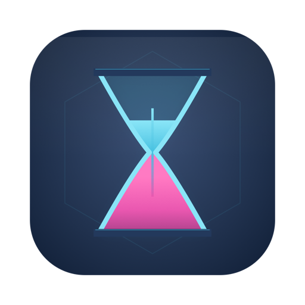

On Windows 10 and 11
Sanduhr für Claude
A native Windows widget that shows how fast you're burning through your claude.ai usage, so you can pace yourself instead of finding out you're out of tokens at 11pm. It draws on your desktop too, and Claude can design that Desk with you.
.NET and WPF with real Win11 Mica glass. Your session cookie in Windows Credential Manager. Free on the Microsoft Store. No telemetry.
Not just a mirror of the numbers.
Sanduhr does the pacing math so you don't have to.
Burn-rate projection
"Hits 100% in ~4h 22m at current pace" warns you before you run dry, not after.
Pace markers on every bar
Colored ticks show where "on pace" is right now, so you pace by eye, not by math.
Sparkline history
Per-tier velocity trends, so you can see whether you're accelerating or cooling off.
Per-model weekly meters
Each per-model weekly allowance, tracked automatically. When Anthropic adds a limit for any new model, its meter just appears, no update needed.
Claude Usage tab + local vault
Local Claude Code logs become a dashboard: sessions by project with agent roll-up, weekly trends, a clickable calendar, sent/received splits, CSV export, and an opt-in vault that outlives the CLI's 30-day log cleanup.
Threshold alerts
A toast and a soft procedural chime when a pool crosses your warn or urgent line. Per-model meters stay politely silent by default.
The Desk, on your desktop.
Sanduhr draws on your desktop, under your windows. It's off by default; turn it on in Settings → Desk.
What it draws
The clock and date, in the handwritten EsteFont that ships with the app; your session and weekly meters with a pace tick; your own messages, with effects like ink, glow and shimmer; and what's playing, with bars that move with your music and a piece that steps aside when you pause. Then add live cards for work Claude is watching, a Launcher, CPU, memory and disk, and the weather for a city you choose.
Arrange it by dragging
Arrange Desk… dims the screen so you can drag each piece to one of eight places, on all monitors, the main one or one you pick, and hide a piece you don't want. Automatic ink picks light or dark from your wallpaper, never the screen, and a plate behind the text keeps it readable over desktop icons. Pieces keep clear of the taskbar and pause while a window covers them.
Just the Desk
No Claude account? Choose Just the Desk on the first-run card and use the Desk on its own; the tray icon brings the widget back, and signing in later brings the meters.
Weather, and only what it needs
The forecast comes from Open-Meteo. Sanduhr sends it two things: the city name you type, to find the place, and its coordinates rounded to about 1 km, at most every 30 minutes. No location permission is used.
A Launcher on the Desk
Up to eight buttons that open Start-menu apps, web apps included, or https:// links, each with its icon or a PNG of your own. No command lines: a button opens a Start-menu app or an https link in your browser, nothing else, and Sanduhr itself never fetches a link or an icon.
A look per song
Turn on Style what's playing and each song is drawn in its own gradient and letter style, with the bars to match. The Claude Code now-playing mod shares the same looks. Off by default.
OLED care
The Desk and the widget drift a few pixels every three minutes, dim after five minutes away and never hold pure white. It reads only the time of your last input. Off by default.
Claude, on your Desk.
With Sanduhr's MCP server installed in a Claude Code folder, Claude can work on your Desk. Everything it proposes waits for you, unless you let it change the Desk directly.
Designed around your wallpaper
Ask Claude Code to design your Desk. It reads how your Desk looks and a summary of your wallpaper, then proposes a whole look: where the pieces sit, the font, the ink, the plate, a Launcher, messages, song looks and a widget theme.
Nothing changes until you say so
The design draws live on your real desktop with a bar that says what changed, and you choose Apply or Dismiss. A font you lack shows its download link and Apply waits. Let Claude change the Desk directly is off by default.
Designs you can go back to
Sanduhr keeps your last ten looks, with pinning, in Settings → Desk → Designs. Put my Desk back, in Settings and the tray menu, returns to the look before the last change.
Live cards for work in progress
Turn on Let agents show watchers and Claude Code can put a live card on your desktop for a CI run or a deploy: a title, progress, a short note, waiting on you when it needs you, and a fade when it passes. Off by default.
Messages and song looks, suggested
Ask Claude for a Desk message or looks for your songs. A suggestion waits in Settings until you Add or Save it, and Dismiss drops it.
Claude Code, from Sanduhr.
Since 3.5.0, Settings → Claude Code finds every Claude Code folder on your PC and installs or removes four things per folder, each behind a consent dialog. Every change keeps a backup and a receipt, so Remove puts the file back exactly.
A statusline under the prompt
Your usage percentages and reset times under Claude Code's prompt. Already have a statusline? Combine runs yours first, then Sanduhr's line, with a segment picker; Replace backs yours up so Remove can restore it. The line starts with a short label from the folder's name (.claude-personal shows personal |), or a SANDUHR_LABEL you set.
An MCP server Claude can ask
sanduhr-mcp lets Claude ask for your usage, your model mix, your history and your burn by project. It reads a folder only after you tick it, none by default, and makes no network calls. The same server carries Claude's Desk designs, watchers, messages and song looks.
Meters above the prompt
The Mac's meters mod now ships with Windows: your session and weekly meters drawn above Claude Code's prompt, from the same snapshot the statusline reads. Link a folder to an account and that folder shows that account's meters.
The glow when Claude needs you
Optional hooks light the top edge of the window you're working in: your theme's accent while Claude waits on you, its success color when it's done. Skipped while a terminal is in front, off by default.
Mods & Config
A read-only page per folder: its settings, statusline, hooks, plugins, mods, MCP server names, CLAUDE.md and log retention, with a warning when Claude Code would delete your logs in 30 days or less.
Themes, in the Studio or in words
Theme Studio edits the fourteen color tokens with the widget as the live preview. With the MCP server installed, ask Claude Code for a theme; the widget lints it, applies it, and the previous theme stays one click away.
One folder Claude Code can see
The files Claude Code reads live in %USERPROFILE%\.sanduhr, so the statusline, the MCP server and the meters mod work the same on the Store and Setup.exe builds. Existing setups move there on first launch; your own entries are left alone.
Accounts, settings and a clean way out.
Follow the account I'm using
Off by default. Sanduhr checks your other signed-in accounts every 15 minutes and switches the widget to the one whose session is climbing, each account in its own browser profile so cookies never mix.
Settings, found by name
A grouped sidebar with a search box that jumps to the control you name, a shortcut that opens Settings from any app (Ctrl+Alt+S, off until you turn it on), and a tray that shows the limit you pick.
What's New and a welcome tour
After an update, a card per change with a Show me button. A new install gets a short tour of your limits, the tray, accounts and Claude Code.
Reset Sanduhr…
Settings → About removes, in five parts you can uncheck: your Claude Code entries through their receipts; your accounts, keys and sign-in profiles; history, snapshots, the vault and logs; your themes; and your settings with your Desk messages, designs, song looks and Launcher pictures. Then it quits.
Install.
Microsoft Store
Search Sanduhr für Claude, publisher 626Labs LLC, and install. Store-signed, so no SmartScreen prompt, and updates arrive through the Store.
Open the Store listingSetup.exe from GitHub
Download 626Labs.Sanduhr-win-Setup.exe from Releases. The installer is unsigned, so SmartScreen shows "Windows protected your PC" once: More info, then Run anyway. Installs per user and updates itself from the release feed; a portable zip sits on the same page. The .msix there is the unsigned Store upload and will not install by double-click.
✓ No data comes back to us.
No telemetry. No analytics. No crash reporter. No usage metrics. 626 Labs has no server and no pipeline to receive data from Sanduhr, even in principle.
The app talks to claude.ai over HTTPS, using your own session cookie, to read your own usage numbers, and checks for its own updates. If you set up the Desk's weather, it asks Open-Meteo for a forecast with the city name you typed and rounded coordinates, nothing else. Your cookie stays in Windows Credential Manager. Uninstalling doesn't clear it: run Settings → About → Reset Sanduhr… first, which removes what you leave checked: your keys, your Claude Code entries and the rest.
Claude sees your usage, your Desk messages and how your Desk looks only if you install Sanduhr's MCP server. It can open a picture of your wallpaper only if you let Claude Code read that file. What Claude Code reads goes to Anthropic like the rest of your conversation, not to us.
Where it ended up.
Every Microsoft Store install since launch, plotted by country. Dot area is proportional to install count.
The Mac build adds the notch, and carries a Claude Code folder's setup to another Mac as a config pack. Sanduhr für Claude on the Mac.